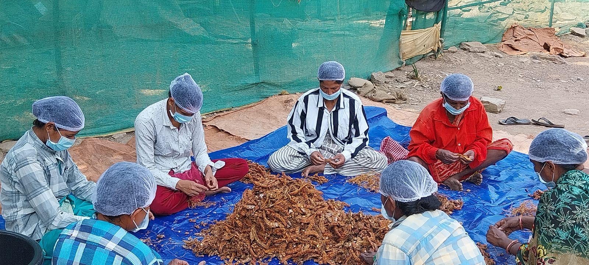
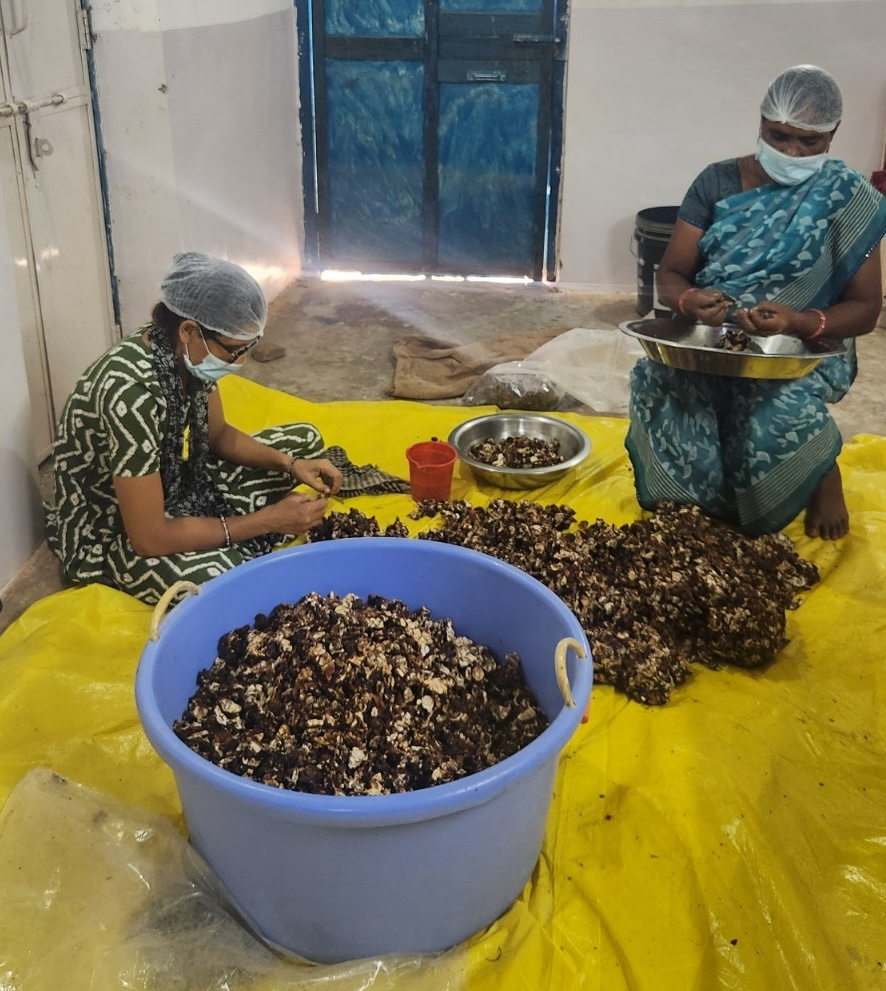

To help us make arrangements, click here to fill up the registration form and indicate your availability.

Since 2022, tribal farmers in Chhattisgarh's Bastar district have been facing severe persecution for their faith in Christ. Ostracized socially and economically in their villages and local marketplaces, these poor families are struggling for even basic needs.
Aiding the afflicted, local Evangelist Jim Mathew, set up Simpletonne Agro Products, a “Business in Mission” enterprise, to cut out the rural middlemen and gain direct access to large urban markets.
Others soon joined the mission.
Paul Thomas, commended from Bengaluru, left one of India's largest IT firms to help operationalze the company.
Dr. Solomon Das, an agro-forest expert, began providing critical technical know-how in the agricultural space.
As a small beginning, Simpletonne is sourcing and processing rice varieties, pulses, millets, and spices with a focus on quality, and making them available on leading ecommerce platforms like Amazon and First Club. But your support is needed for real impact!
Jim Mathew
Paul Thomas
Solomon Das
The whole body of Christ suffers when its members are persecuted. Here’s how your hands can bring relief:

To explain the prevailing persecution and Simpletonne's vision in detail, Jim and Paul will be in Bengaluru for a Let’s Prevail over Persecution seminar. All our assemblies are invited. Will you be there?
Time: 10:30 AM, 28th of November 2026
Byrathi Brethren Church, Doddagubbi Road.
Address: 1 A, 8, Main, Doddagubbi Main Rd, Byrathi, Athmavidya Nagar, Bengaluru, Karnataka 560077
Location: Google Maps
Registration: Click here now!
+91 93290 93101
hello@maatti.in